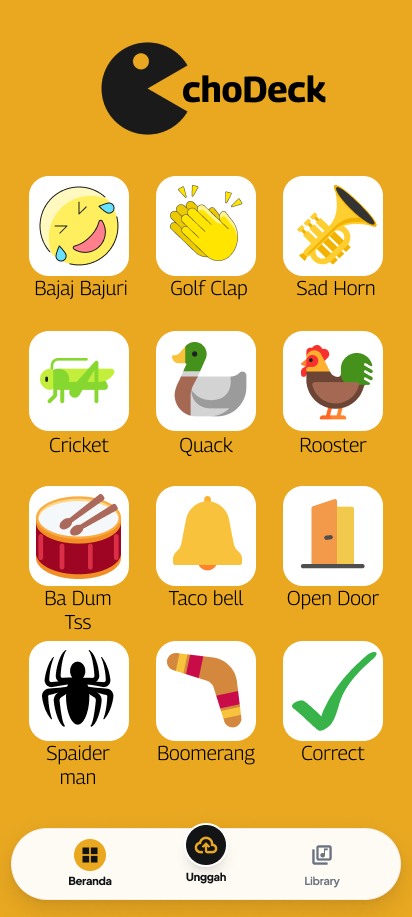
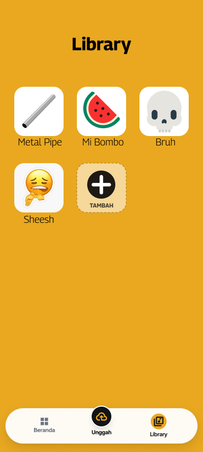
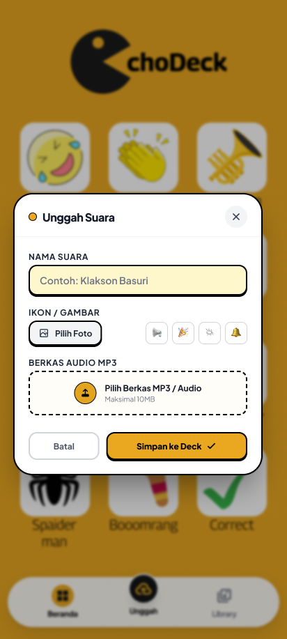

Flutter & Figma
EchoDeck Mobile Soundboard
Aplikasi mobile interactive soundboard dengan fitur one-tap playback latensi rendah (< 100ms), kustomisasi audio MP3, dan manajemen pustaka suara untuk content creator & live streamer.
Mahasiswa Informatika Universitas Teknologi Yogyakarta (UTY) yang berfokus pada pengembangan aplikasi mobile & web.
Mockup antarmuka aplikasi hasil perancangan UI/UX Figma dan pengembangan Flutter SDK:
Branding khas kuning #E5A93C & logo Pac-Man.

Grid soundboard 12 audio efek dengan navigasi bawah.

Koleksi audio kustom dan tombol cepat + TAMBAH.

Pop-up dialog input audio kustom berformat MP3.
Aplikasi mobile interactive soundboard dengan fitur one-tap playback latensi rendah (< 100ms), kustomisasi audio MP3, dan manajemen pustaka suara untuk content creator & live streamer.
Silakan hubungi saya melalui kontak berikut:
Email: oktabismillahamim@gmail.com
WhatsApp: 0896-8839-4953